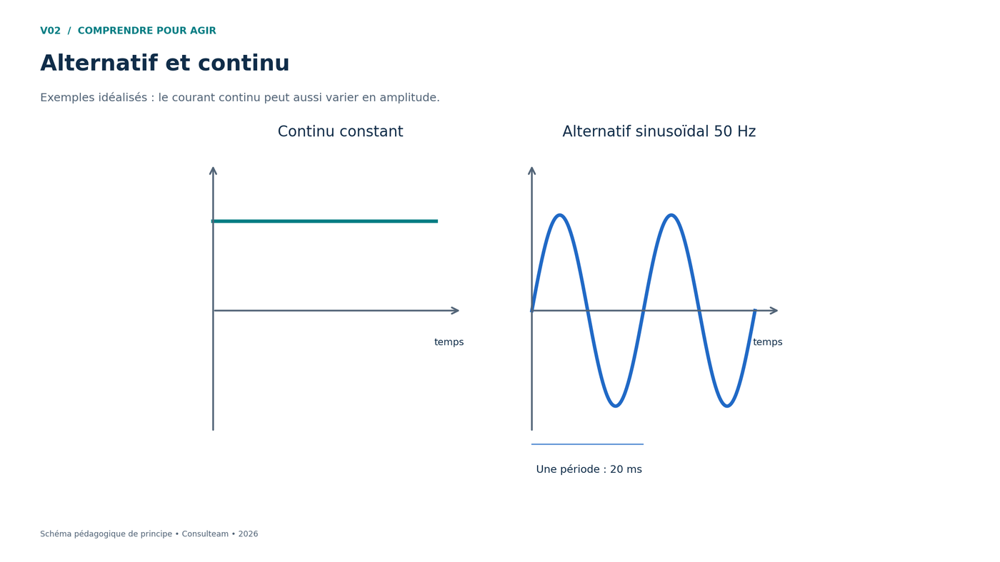
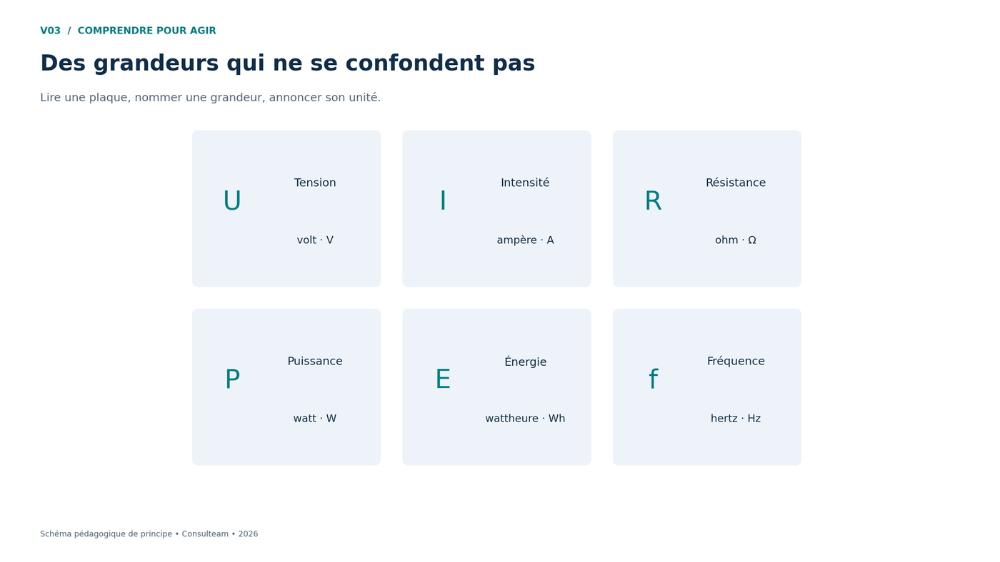
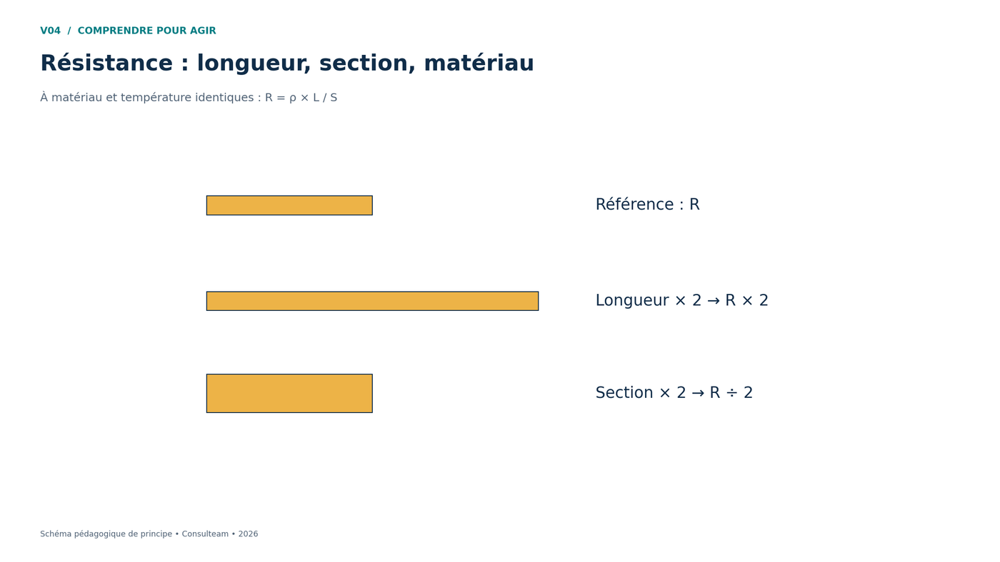
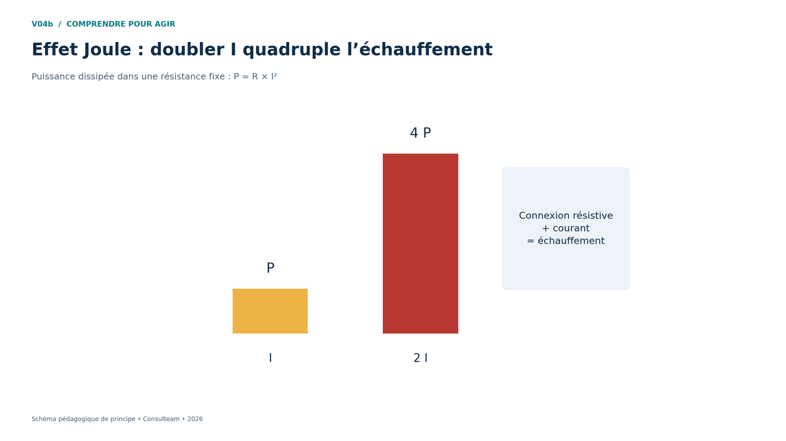
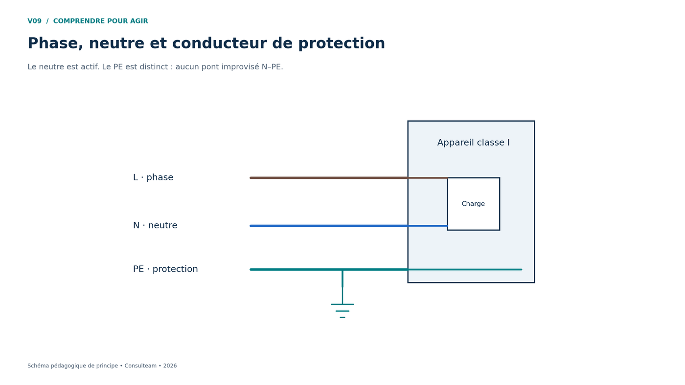
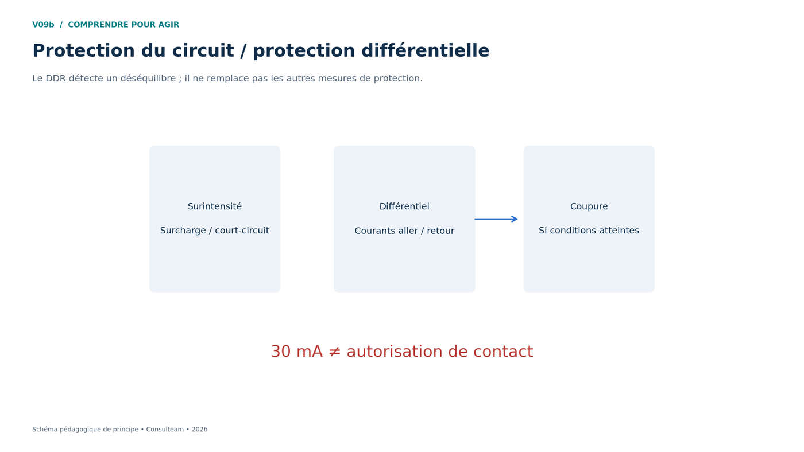

Synthèse de sécurité
Repères : accident, alerte, incendie
Une installation électrique n’est jamais seule : l’humidité et l’état du matériel changent la façon de réagir. Cette page donne des repères généraux ; les consignes de votre établissement priment.
Limite à connaître. La session réunit plusieurs entreprises : ce support ne décrit aucune installation ni aucune consigne interne. Elles se demandent à votre employeur et prévalent sur cette page.
À connaître sur son site
Point de rassemblement et chemin d’évacuation · emplacement des extincteurs et des coupures d’urgence · procédure d’alerte interne et numéros à composer · secouristes présents.
Accident électrique : conduite à tenir
- Mettre hors tension sans toucher la victime.
- Si la coupure est impossible, dégager la victime sans s’exposer ni exposer d’autres personnes.
- Alerter : secouriste du site, puis SAMU (15), pompiers (18) ou 112.
- Secourir et rester auprès de la victime jusqu’à l’arrivée des secours.
En cas de doute sur la tension, ne pas approcher et faire alerter. Une électrisation, même d’apparence bénigne, justifie un avis médical.
Alerte
- Donner son nom, le lieu exact (adresse, bâtiment, accès) et la nature de l’accident.
- Préciser si la victime est consciente et si la coupure de l’alimentation est faite.
- Ne pas raccrocher avant d’y être invité, envoyer quelqu’un attendre les secours à l’entrée du site.
Incendie d’origine électrique
- Donner l’alarme et faire alerter les secours.
- Couper l’alimentation de l’appareil ou du circuit concerné si cela peut se faire sans danger.
- Éviter l’eau sur une installation sous tension : l’eau peut conduire le courant.
- Utiliser un extincteur adapté seulement si l’on a été formé et si le feu est petit ; sinon, évacuer et fermer portes et fenêtres derrière soi.
- Évacuer selon la consigne du site vers le point de rassemblement.
Le type d’extincteur et la conduite à tenir précis dépendent de l’établissement et du matériel en place : appliquer les consignes affichées et la formation incendie.
Humidité
- L’humidité diminue la résistance du corps : un contact sans gravité à sec peut devenir dangereux.
- Coffrets rouillés, câbles craquelés et traces d’échauffement sont des anomalies à signaler.
- Pas de lavage au jet ni de projection d’eau sur ou près d’un coffret, d’une prise ou d’un appareil sous tension.
- Un câble endommagé ou mouillé ne s’utilise pas ; un matériel mouillé ne se touche pas avant sa mise hors tension.
Repères du socle électrique en images
Les notions de base utiles pour comprendre le danger : tension et courant, alternatif et continu, résistance, échauffement, conducteurs d’un circuit, protection différentielle.






Crédits des images
Schémas : conception pédagogique Consul Team, schémas de principe (non à l’échelle). Photographies, sous licence libre (Wikimedia Commons) :
- Gants isolants : Jpbazard · CC BY-SA 4.0
- Vérificateur d’absence de tension : Raimond Spekking · CC BY-SA 4.0
- Disjoncteur modulaire : Kae · CC BY-SA 3.0
- Interrupteur différentiel : Diermaier · CC0
- Contacteur : Kae · CC BY-SA 3.0
- Arrêt d’urgence : Cjp24 · CC BY-SA 3.0
- Cadenas de condamnation : Bill Bradford · CC BY 2.0
- Armoire électrique : photographie libre de droits (Wikimedia Commons)
- Outil isolé : Wiha Werkzeuge · CC BY-SA 4.0
- Pince isolée : ElectricEye · CC BY-SA 4.0